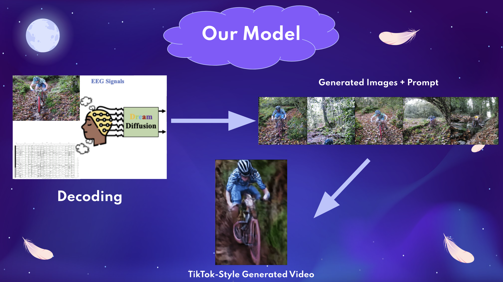
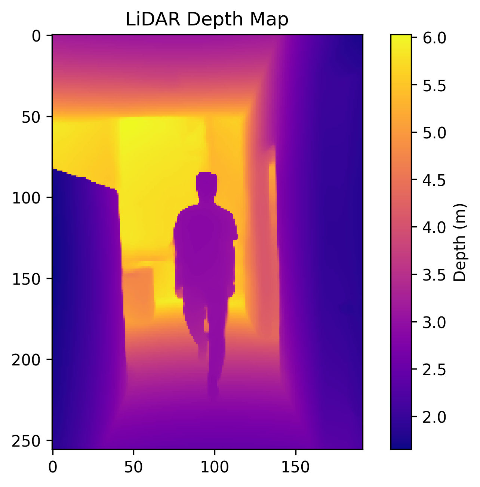
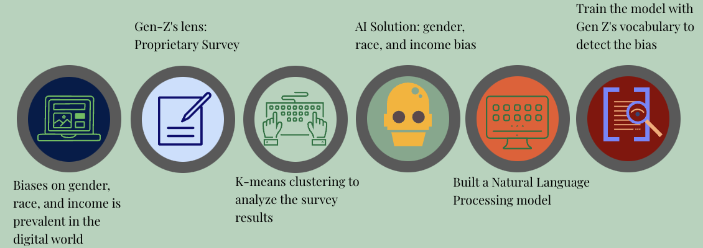

Projects
Dreamcatcher
DreamCatcher is an innovative project I built with two friends for CMU's 2025 TartanHacks Hackathon. The project aims to decode brainwave activity during sleep into AI-generated videos of dreams, allowing users to visualize and share their dreams. It integrates cutting-edge EEG decoding trained through temporal masking from the Dream Diffusion model, and utilizes CLIP and Stable Diffusion to align EEG signals with text/image vectors and generate visualizations of dreams. It further builds on this by allowing user inputs to extend dream visualizations into AI-generated videos, and provides a social platform for dream-sharing. Additionally, with a short AI analysis of the dream, users will be able to gain insights into their subconscious, providing possible applications in both medical and social fields.


LiDAR Gait Analysis
This is a project I worked on as part of my research at Yale, with an end goal of using the LiDAR recording capability of iPads to analyze gait and to help automate the diagnosis process for Parkinson's and related diseases. I first extensively tested the capabilities of the iPad LiDAR camera, extracting raw depth, camera intrinsics, and rgb data from videos using the StrayScanner app. With this data, I created a program that could create frame-by-frame depth map videos corresponding to the original, as well as 3D point-cloud video recreations, utilizing the OpenCV and Open3d python libraries. Building off the LiDAR data, I incorporated Google's MediaPipe pose estimation model to track joints including the knees, hips, heels, shoulders, elbows, and wrists in the original rgb videos. I then wrote a program to map these points to the LiDAR depth data which led to a novel gait analysis pipeline in which statistics such as arm/knee angle, position, and speed can be tracked over time.

Trioshield Glove
Trioshield Glove is a project I worked on as part of the 2025 Rethink the Rink Make-A-Thon, a partnership program between CMU, the Pittsburgh Penguins, Covestro, and Bauer. As one of the sixteen students selected to participate, my team was tasked to spend one week learning from industry professionals and create a prototype of an improved hockey glove. As a lifelong hockey player, this was a very exciting opportunity as we got to speak with NHL players about their concerns, issues, and ideas, as well as with leading experts in the materials industry from Covestro and Bauer to learn about many different materials that could be put into use. In the process of building our glove, we utilized CAD and Arduino tools to aid in modeling changes and measuring impact on the glove from different forces. In the end, our design decreased wear on the palm of the glove, lowered the weight of the glove, and provided a safer wrist guard, all while being cheaper than the original design. As such, we were able to increase safety and durability while also promoting the accessibility and affordability of hockey, and our designs were licensed for $8k by Covestro at the end of the week.


Bias Detection
This is a research project I worked on with two friends during high school where we implemented machine learning techniques including natural language processing and clustering. We first created a python-based program using Word2vec which took in several biased word pairs and generated numerical values for each word in the corpus for how biased each one is based on the word pairs used to calibrate the model. We then wrote and sent out a survey to hundreds of Gen-Z respondents to obtain word pairs to use to calibrate the model for different categories including race, gender, and income. We then processed and cleaned this data, and ran a K-means clustering algorithm on the results, where we discovered ideas such as social justice issues were prevalent from training with the Gen-Z word pairs. The results from our research were published in the IEEE Access Journal.

Portfolio Website
This portfolio website is a page I created for fun to teach myself HTML and CSS. Despite taking a web design course for a semester in 9th grade, I had forgotten most of my web development skills, but after a few hours of YouTube videos, this website came into fruition. This page was build entirely using HTML and CSS without use of external frameworks or libraries, although I hope to expand it in the future. Although I'm not particularly keen on pursuing any kind of career in web design, I think it's a neat and fun tool to have, and I guess it's always good to have hobbies!